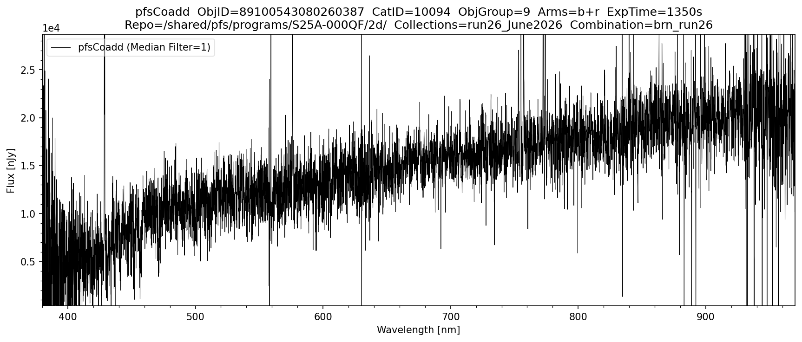

pfsCoadd
Overview
pfsCoadd contains the wavelength-calibrated, sky-subtracted, flux-calibrated and coadded spectra combining data across multiple visits (exposures).
Unlike the visit-based products, pfsCoadd files are organised by three dimensions:
combination— a string identifying which set of visits were combined (e.g.brn_run26). This is the top-level key used byButlerto locate coadd files and is embedded in every filename.catId— the object catalog identifier; files are grouped into subdirectories bycatIdobjGroup— objects within acatIdare further split into numbered groups, due to limitations on file sizes.
The individual coadded spectrum of a single object (i.e. one row/entry inside pfsCoadd) is referred to as a pfsObject spectrum.
- Flux units are nJy (nano-Janskys)
- The
WAVELENGTHis stored in HDU #4 as an image or table; if all spectra share the same wavelength grid it is written as a single array
Filename format: pfsCoadd_PFS_{combination}_{catId}_{objGroup}_{collection}.fits
Example from proposal S25A-000QF, catId 10094 (which represents the Observatory Filler Program) on the Science Platform (brn_run26 combination, 22 object groups):
/shared/pfs/programs/S25A-000QF/2d/run26_June2026/pfsCoadd/10094/
pfsCoadd_PFS_brn_run26_10094_1_run26_June2026.fits
pfsCoadd_PFS_brn_run26_10094_2_run26_June2026.fits
...
pfsCoadd_PFS_brn_run26_10094_22_run26_June2026.fits
FITS structure:
| HDU | Name | Type | Units | Dimensions |
|---|---|---|---|---|
| #0 | PDU | Header | — | — |
| #1 | TARGET | Binary table | — | NOBJECT rows |
| #2 | TARGETFLUX | Binary table | — | NFLUX rows |
| #3 | OBSERVATIONS | Binary table | — | NOBS rows |
| #4 | WAVELENGTH | Image/table | nm (vacuum) | NWAVELENGTH × NOBJECT |
| #5 | FLUX | Image/table | nJy | NWAVELENGTH × NOBJECT |
| #6 | MASK | Image/table | bitmask | NWAVELENGTH × NOBJECT |
| #7 | SKY | Image/table | nJy | NWAVELENGTH × NOBJECT |
| #8 | COVAR | Image/table | nJy² | NWAVELENGTH × NOBJECT × 3 |
| #9 | COVAR2 | Image/table | — | NCOARSE × NCOARSE |
| #10 | METADATA | Binary table | — | NOBJECT rows |
| #11 | FLUXTABLE | Binary table | — | NOBJECT × NOBS × NWAVELENGTH rows |
| #12 | NOTES | Binary table | — | NNOTES rows |
Finding All Combinations in Collections
You can check all combination names in your collections as follows:
from lsst.daf.butler import Butler
repo = "/shared/pfs/programs/S25A-000QF/2d/"
collections = "run26_June2026"
butler = Butler(repo, collections=collections)
combinations = sorted({ref.dataId['combination'] for ref in butler.registry.queryDatasets('pfsCoadd')})
print(f"Available combinations in '{collections}': {combinations}")
Output:
Available combinations in 'run26_June2026': ['bmn_run26', 'brn_run26']
A Note about Combinations on the Science Platform
From run26_June2026 onwards (i.e. from the June 2026 processing run), all data are split into two combinations:
brn— combines all visits observed with the low-resolution red arm (r)bmn— combines all visits observed with the medium-resolution red arm (m)
This split is made because the two red-arm modes cover different wavelength ranges and can be difficult to coadd together. When plotting, choose the combination that matches the arm configuration of your data. The code in this tutorial uses brn_run26 as the default for demonstration.
For reference, older collections (prior to run26_June2026) used a single combination that merged all visits regardless of arm mode, though this led to several downstream problems for a subset of objects with both low and medium resolution data, such as spectroscopic redshift and line measurements using the LAM1D pipeline (hence the above change was made). For example, S25A_April2026 has only one combination:
from lsst.daf.butler import Butler
repo = "/shared/pfs/programs/S25A-000QF/2d/"
collections = "S25A_April2026"
butler = Butler(repo, collections=collections)
combinations = sorted({ref.dataId['combination'] for ref in butler.registry.queryDatasets('pfsCoadd')})
print(f"Available combinations in '{collections}': {combinations}")
Output:
Available combinations in 'S25A_April2026': ['selected_S25A']
Viewing pfsCoadd Spectra
The following plots the pfsCoadd spectrum of a single object. Unlike the visit-based products, pfsCoadd has no visit dimension — objects are indexed by combination, catId and objGroup instead. Instantiate Butler by providing the datastore repo and collections, and set combination to the combination you want to plot (see above on how to find available combinations). The code then automatically locates the corresponding catId and objGroup. Specify an objid to plot that object directly, or use browse_index to step through all science objects in the collections sorted by objId. The specific arms to be shown can be selected and the spectrum can be smoothed using a median filter if desired.
import numpy as np
import matplotlib.pyplot as plt
from scipy import ndimage
from lsst.daf.butler import Butler
from pfs.datamodel import TargetType
# ==== USER-DEFINED PARAMETERS ====
repo = "/shared/pfs/programs/S25A-000QF/2d/" # path to the 2d DRP repository
collections = "run26_June2026" # collection name
combination = "brn_run26" # Set to the combination you want to plot
objid = 89100543080260387 # If set, plots this object directly. If None uses browse_index
browse_index = 0 # Used only if objid is None; steps through SCIENCE objects by index
MEDIAN_FILTER_SIZE = 1 # 1 = no filtering, increment for smoothing as desired
arms = ['b', 'r'] # options: 'b', 'r', 'n' or any combination of arms to plot
# ==== PFSCOADD PLOTTING FUNCTION ====
def plot_pfscoadd(repo, collections, combination, objid, browse_index, MEDIAN_FILTER_SIZE, arms):
ARM_RANGES = {
'b': (380, 650),
'r': (630, 970),
'n': (940, 1260),
}
butler = Butler(repo, collections=collections)
datarefs = list(butler.registry.queryDatasets('pfsCoadd'))
if not datarefs:
raise ValueError(f"No pfsCoadd datasets found in collections '{collections}'")
# ==== VALIDATE COMBINATION ====
all_combinations = sorted({ref.dataId['combination'] for ref in datarefs})
if combination not in all_combinations:
raise ValueError(f"combination '{combination}' not found. Available: {all_combinations}")
cat_ids = sorted({ref.dataId['cat_id'] for ref in datarefs
if ref.dataId['combination'] == combination})
# ==== RESOLVE OBJID ====
if objid is None:
all_objids = []
for cid in cat_ids:
ogm = butler.get("objectGroupMap", combination=combination, cat_id=cid)
all_objids.extend(int(o) for o in ogm.objId)
all_objids = sorted(set(all_objids))
objid = all_objids[browse_index]
print(f"Browse index {browse_index} of {len(all_objids)-1} → objId={objid}")
# ==== FIND CATID + OBJ_GROUP ====
catid = None
for cid in cat_ids:
ogm = butler.get("objectGroupMap", combination=combination, cat_id=cid)
try:
obj_group = ogm[int(objid)]
catid = cid
break
except KeyError:
continue
if catid is None:
raise ValueError(f"objId {objid} not found in any objectGroupMap in collections '{collections}'")
print(f"ObjId={objid} CatID={catid} ObjGroup={obj_group}")
# ==== LOAD DATA ====
pfscoadd = butler.get("pfsCoadd", combination=combination, cat_id=catid,
instrument='PFS', obj_group=obj_group)
pfsobject = pfscoadd[int(objid)]
# ==== ARM MASK ====
arm_mask = np.zeros(len(pfsobject.wavelength), dtype=bool)
for arm in arms:
lo, hi = ARM_RANGES[arm]
arm_mask |= (pfsobject.wavelength >= lo) & (pfsobject.wavelength <= hi)
xlim_lo = min(ARM_RANGES[arm][0] for arm in arms)
xlim_hi = max(ARM_RANGES[arm][1] for arm in arms)
# ==== MASK BAD PIXELS ====
pixels_bad = (pfsobject.mask & pfsobject.flags.get('BAD', 'CR', 'SAT', 'NO_DATA')) != 0
pixels_good = arm_mask & ~pixels_bad
# ==== YLIM ====
flux_in_range = pfsobject.flux[pixels_good]
p2, p98 = np.nanpercentile(flux_in_range, [2, 98])
span = p98 - p2
ylim_lower = p2 - 0.05 * span
ylim_upper = p98 + 0.15 * span
# ==== EXPOSURE TIME ====
unique_visits, idx = np.unique(pfsobject.observations.visit, return_index=True)
total_exptime = pfsobject.observations.expTime[idx].sum()
# ==== PLOT ====
arms_label = '+'.join(arms)
fig, ax = plt.subplots(figsize=(12, 5))
fig.subplots_adjust(top=0.88, bottom=0.1, left=0.07, right=0.97)
ax.plot(pfsobject.wavelength[pixels_good],
ndimage.median_filter(pfsobject.flux[pixels_good], size=MEDIAN_FILTER_SIZE),
linewidth=0.5, color='black',
label=f'pfsCoadd (Median Filter={MEDIAN_FILTER_SIZE})')
ax.set_xlim([xlim_lo, xlim_hi])
ax.set_ylim([ylim_lower, ylim_upper])
ax.ticklabel_format(axis='y', style='sci', scilimits=(0, 0))
ax.set_title(f'pfsCoadd ObjID={objid} CatID={catid} ObjGroup={obj_group} Arms={arms_label} ExpTime={total_exptime:.0f}s\n'
f'Repo={repo} Collections={collections} Combination={combination}')
ax.legend(loc='upper left', fancybox=True, framealpha=0.5)
ax.minorticks_on()
ax.set_xlabel('Wavelength [nm]')
ax.set_ylabel('Flux [nJy]')
plt.savefig(f'pfsCoadd_{collections}_{objid}.png', dpi=150, bbox_inches='tight')
plt.show()
# ==== RUN ====
plot_pfscoadd(
repo = repo,
collections = collections,
combination = combination,
objid = objid,
browse_index = browse_index,
MEDIAN_FILTER_SIZE = MEDIAN_FILTER_SIZE,
arms = arms,
)
Output:
